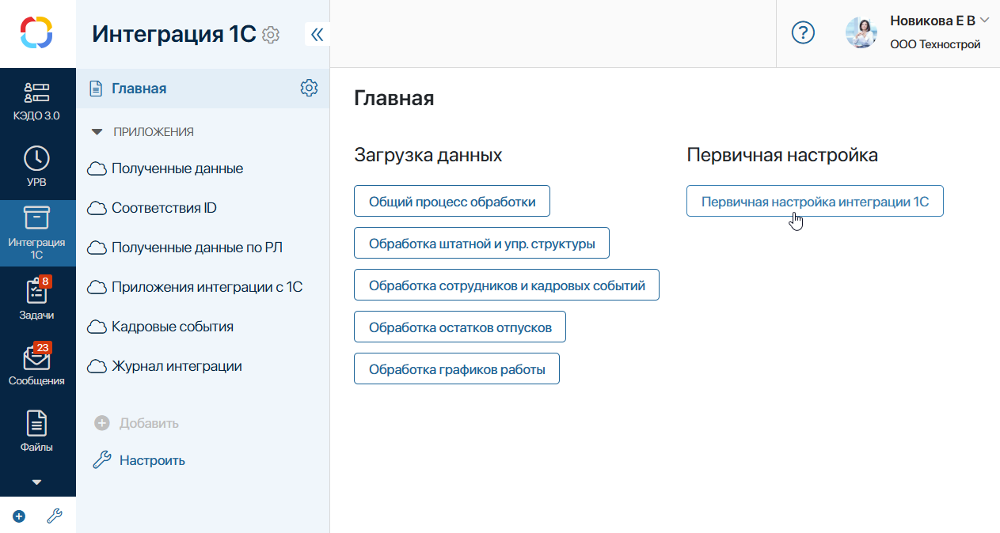
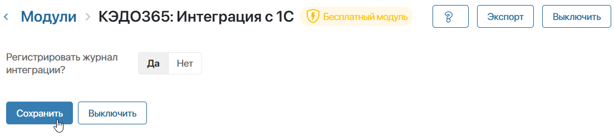
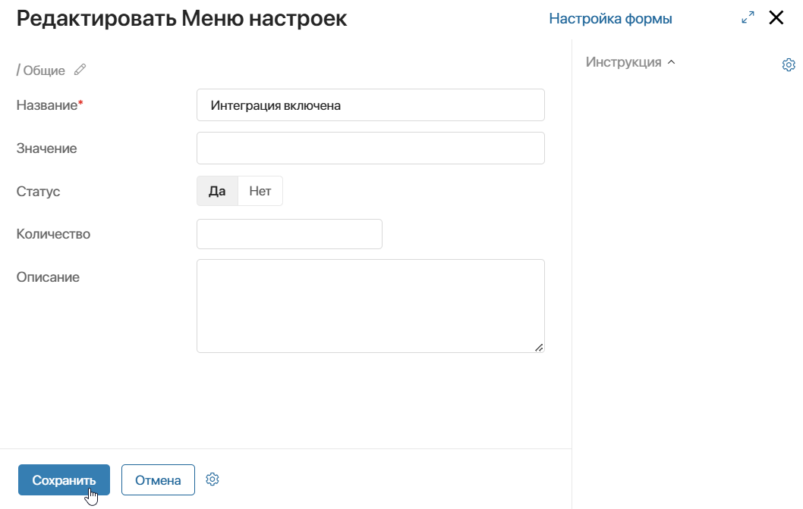
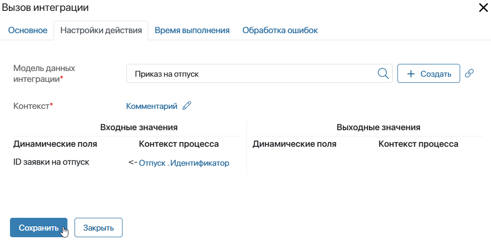
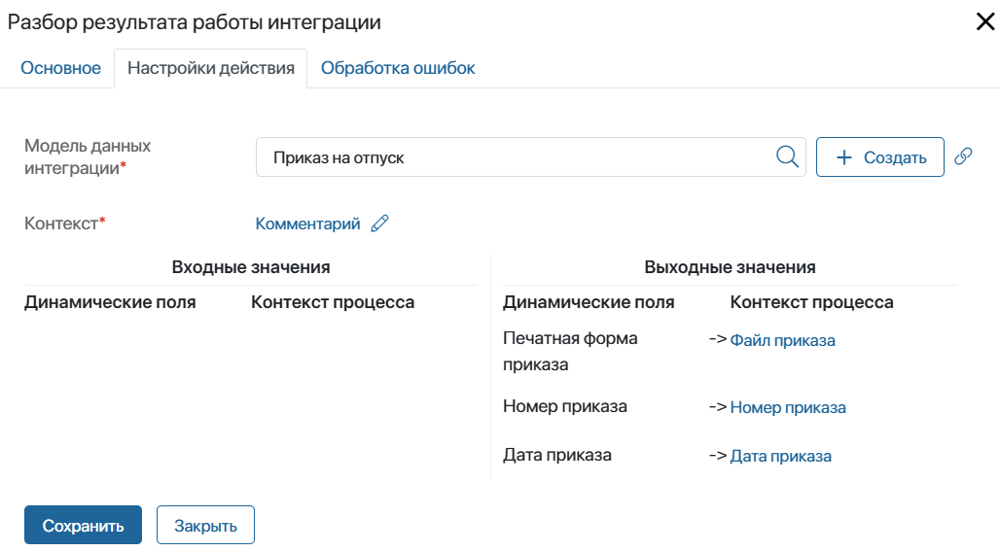

После того как в 1С загружено специальное расширение ELMA365 и подключён обмен данными, необходимо выполнить настройки на стороне ELMA365. Для этого:
- Перейдите в ELMA365 и убедитесь, что в систему загружены решения: КЭДО 3.0, Портал КЭДО, КЭДО365: Интеграция с 1С.
- Проверьте, что в решении КЭДО 3.0 выполнен процесс первичных настроек.
- Перейдите в раздел Интеграция 1С > Главная и нажмите Первичная настройка интеграции 1С.

По завершении процесса проверьте следующие настройки:
- в разделе КЭДО 3.0 > Интеграции КЭДО добавлен элемент приложения Интеграция с 1С;
- в разделе КЭДО 3.0 > Модели данных интеграции созданы элементы: Приказ на увольнение, Приказ на отпуск, Приказ на командировку.
- Перейдите в раздел Администрирование > Модули, выберите Модуль КЭДО 3.0 и включите его. Параметры настроек для модуля не предусмотрены. Активация модуля обеспечивает доступ для программы 1С к Web API ELMA365, благодаря чему осуществляется корректный обмен данными.
- Вернитесь к списку модулей и выберите КЭДО365: Интеграция с 1С. Включите модуль. На его странице настройте опцию Регистрировать журнал интеграций. При выборе Да данные обмена между ELMA365 и 1С будут фиксироваться в разделе Интеграция 1С > Журнал интеграции. Вы сможете отслеживать актуальное состояние процессов обмена.

- Сохраните настройки модуля.
Настройки интеграции с 1С завершены.
Теперь вы можете загрузить первичные данные из 1С в ELMA365: информацию об организациях, штатное расписание, базу сотрудников. Подробнее об этом читайте в статье «Загрузить справочники и данные из 1С в ELMA365».
Настроить интеграцию с 1С для кадровых процессов
Интеграция с 1С обеспечивает загрузку в ELMA365 справочников и базу сотрудников и последующую синхронизации этих данных.
Кроме того, для кадровых процессов вы можете настроить выполнение задач бухгалтерами и специалистами отдела кадров в программе 1С. Созданные пользователями заявления будут отправляться в 1С и заноситься в базу. Ответственный пользователь сможет перейти в 1С, открыть заявление, выполнить необходимые расчёты, сформировать приказ и выслать его в ELMA365, где документ пройдёт далее по маршруту обработки.
Настроить работу таким образом можно для процессов оформления отпуска, командировки и увольнения. Это выполняется в несколько этапов:
- Включите использования в кадровых процессах маршрутов, настроенных с учётом подключённой интеграции с 1С.
Перейдите в раздел КЭДО 3.0 и откройте приложение Меню настроек. На открывшейся странице в списке параметров выберите Интеграция включена. В его карточке нажмите Редактировать и в поле Статус укажите значение Да. Сохраните изменения в параметре.

- Скорректируйте настройки процессов оформления отпуска, командировки и увольнения для корректного обмена данными. Ниже рассмотрим подробнее, какие изменения необходимо внести в процессы.
Отредактировать процессы для подключения интеграции с 1С
Чтобы обеспечить подключение учётной системы в кадровых процессах, в решении КЭДО 3.0 используются специальные модели данных.
Модель данных — это элемент служебного приложения, в котором хранится набор полей, участвующих в обмене между 1С и ELMA365. Для каждого настраиваемого процесса предусмотрена определённая модель данных: Приказ на увольнение, Приказ на отпуск, Приказ на командировку. Они добавляются в систему в процессе первичной настройки решений и хранятся в разделе КЭДО 3.0 > Модели данных интеграции.
Чтобы синхронизация и обмен информацией между 1С и ELMA365 выполнялись корректно, каждую модель данных и её свойства нужно передать в соответствующий кадровый процесс. Для этого на схеме процесса редактируются настройки блоков Вызов интеграции и Разбор результата работы интеграции, которые обеспечивают подключение к учётной системе. В них сопоставляются свойства модели данных с контекстом процесса. После этого в процессе будет указано, какую информацию передавать в 1С и в какие переменные записывать результат отработки блоков.
Настройки производятся аналогичным образом. Рассмотрим подробнее действия для каждого процесса.
Процесс обработки приказа на отпуск
- Перейдите в раздел УРВ > Приказы на отпуск, нажмите значок шестерёнки рядом с названием приложения и выберите пункт Бизнес-процессы.
- Откройте схему процесса Создание и подписание приказа.
- Найдите на схеме блок Вызов интеграции и откройте его настройки, дважды нажав на него. Перейдите на вкладку Настройки действия и заполните параметры:

- Модель данных интеграции* — чтобы передать в процесс свойства определённой модели данных, в поле выберите элемент Приказ на отпуск из приложения Модели данных интеграции;
- в таблице Входные значения сопоставьте параметр настроек с переменной из контекста процесса. Для ID заявки на отпуск выберите поле Отпуск > Идентификатор.
Сохраните настройки.
- Настройте блок Разбор результата работы интеграции. Дважды нажмите на него на схеме процесса и в открывшемся окне перейдите на вкладку Настройки действия. Заполните параметры:

- Модель данных интеграции* — выберите в поле элемент Приказ на отпуск из приложения Модели данных интеграции;
- сопоставьте Выходные значения:
- Печатная форма приказа — Файл приказа;
- Номер приказа — Номер приказа;
- Дата приказа — Дата приказа.
Сохраните настройки блока.
- После внесения изменений в блоки процесса сохраните и опубликуйте процесс Создание и подписание приказа.
Процесс обработки приказа на командировку
Настройки выполняются аналогичным образом, как для процесса создания приказа на отпуск:
- Перейдите в раздел УРВ > Приказы на командировку, в настройках приложения откройте список процессов и выберите Создание и подписание приказа.
- На схеме процесса дважды нажмите на блок Вызов интеграции, в его настройках на вкладке Настройки действия заполните параметры:
- Модель данных интеграции* — выберите в поле элемент Приказ на отпуск из приложения Модели данных интеграции;
- в таблице Входные значения сопоставьте параметр настроек ID заявки на командировку с полем Командировка > Идентификатор.
Сохраните настройки.
- В настройках блока Разбор результата работы интеграции выберите модель данных интеграции — Приказ на командировку. Выходные значения заполните так же, как описано выше для процесса создания приказа на отпуск. Сохраните настройки блока.
- После внесения изменений в блоки процесса сохраните и опубликуйте процесс Создание и подписание приказа.
Процесс обработки приказа на увольнение
Таким же образом отредактируйте процесс создания приказа на увольнение:
- Перейдите в раздел КЭДО 3.0 > Приказы на увольнение, в настройках приложения откройте список процессов и выберите Создание приказа на увольнение.
- На схеме процесса дважды нажмите на блок Вызов интеграции, в его настройках на вкладке Настройки действия заполните параметры:
- Модель данных интеграции* — выберите в поле элемент Приказ на увольнение из приложения Модели данных интеграции;
- в таблице Входные значения сопоставьте параметр ID заявки на увольнение с полем Заявка на увольнение > Идентификатор.
Сохраните настройки.
- В настройках блока Разбор результата работы интеграции выберите модель данных интеграции — Приказ на увольнение. В таблице выходных значений сопоставьте параметр Печатная форма приказа с полем Файл приказа на увольнение. Сохраните настройки блока.
- После внесения изменений в блоки процесса сохраните и опубликуйте процесс Создание приказа на увольнение.
Процесс обработки расчётных листов из 1С
Полученные из 1С данные по расчётным листам сохраняются в элементах приложения Интеграция 1С > Полученные данные по РЛ. Их нужно преобразовать, сохранить в разделе КЭДО 3.0 > Расчетные листы и отправить на ознакомление сотрудникам. Это преобразование данных осуществляется в рамках процесса Обработка расчетных листов из 1С.
Чтобы пользователи после отправки данных в ELMA365 не обрабатывали их вручную, вы можете настроить автоматический запуск процесса по расписанию. Для этого:
- Перейдите в раздел Интеграция 1С > Полученные данные по РЛ.
- Нажмите значок шестерёнки рядом с названием приложения и выберите пункт Бизнес-процессы.
- Откройте схему процесса Обработка расчетных листов из 1С.
- Выберите вкладку Настройки, включите опцию Запускать по расписанию и задайте график обработки и рассылки пользователям расчётных листов. Например, процесс может срабатывать каждый месяц в день выплаты сотрудникам заработной платы.
- Сохраните и опубликуйте процесс.